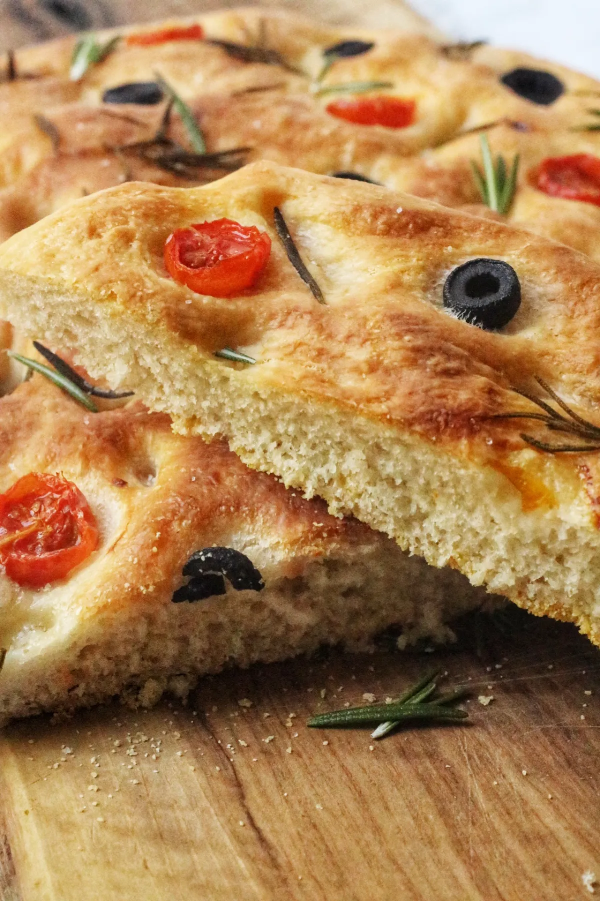

Focaccia Bread

Description:
This is a traditional olive oil flat bread from Genoa Italy. It takes a lot of time to make, but the extra rising time gives the bread a fabulous flavor.
Ingredients:
- ½ cup warm water
- ½ teaspoon active dry yeast
- 2 ½ cups unbleached bread flour
- ½ teaspoon salt
- ½ cup cold water
- 1 tablespoon extra-virgin olive oil
- 1/4 cup Biga
- 1 tablespoon additional extra-virgin olive oil for brushing
- 2 teaspoons cornmeal for dusting
Steps:
- Place 1/2 cup warm water in a small bowl, and sprinkle yeast over the surface. Let stand until yeast is absorbed, about 10 minutes.
- Combine flour and salt in a large bowl. Make a well in the center, and pour in the cold water, yeast mixture, 1 tablespoon olive oil, and biga. Stir together using a sturdy wooden spoon.
- When the dough comes together, turn out onto a floured surface, and knead vigorously for about 20 minutes. Take a few 1 to 2 minute breaks if you like. The dough will be somewhat sticky until it is fully kneaded. Form dough into a ball. Rub the inside of a clean bowl with oil, and place the dough in it. Turn to coat the ball with oil. Cover with a towel and let rise at room temperature until doubled in size. This will take about 1 1/2 hours.
- Punch down the dough by folding the edges into the center and turning it over so the top is once again smooth. Cover the bowl again, and let the dough rise a second time until doubled, about 45 minutes.
- Turn the dough out onto a floured surface and gently flatten into an 8 inch square using the palms of your hands. Cover and let rise again.
- Preheat the oven to 425 degrees F (220 degrees C). Place a baking stone in the oven while it preheats. Dust a bakers peel with cornmeal, and gently slide it under the dough square. Use your fingers to make a dimpled surface by pressing them about 3/4 of the way down into the dough. Mist with water.
- Sprinkle a little cornmeal over the surface of the baking stone. Slide the square off of the peel onto the baking stone. Mist some water into the hot oven, and quickly shut the door.
- Bake for 30 minutes in the preheated oven, until the top is golden brown. Remove from the oven to cool on a wire rack. Brush the surface with remaining olive oil while the foccacia is still hot.